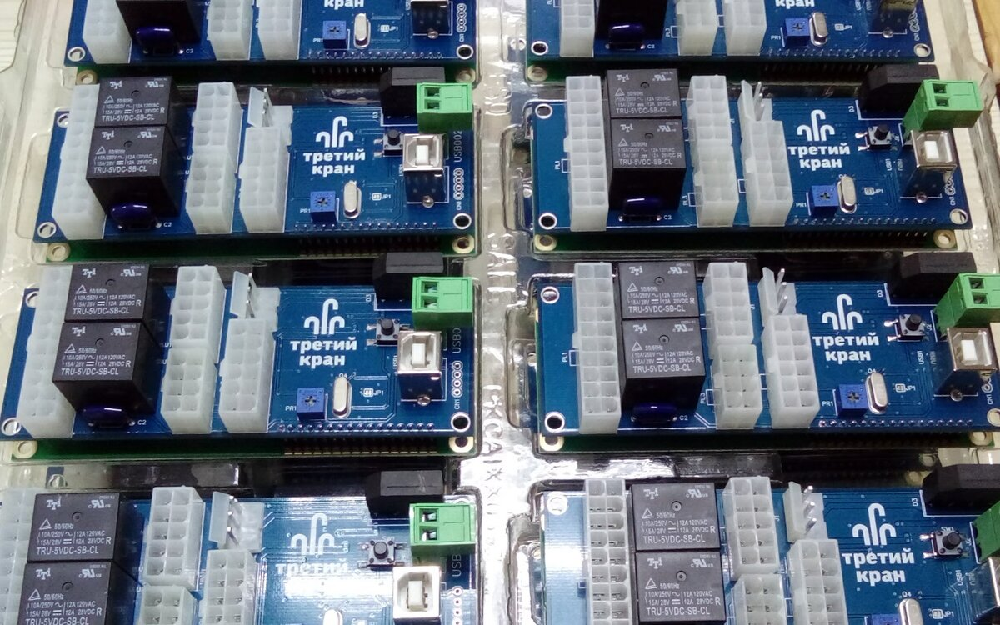
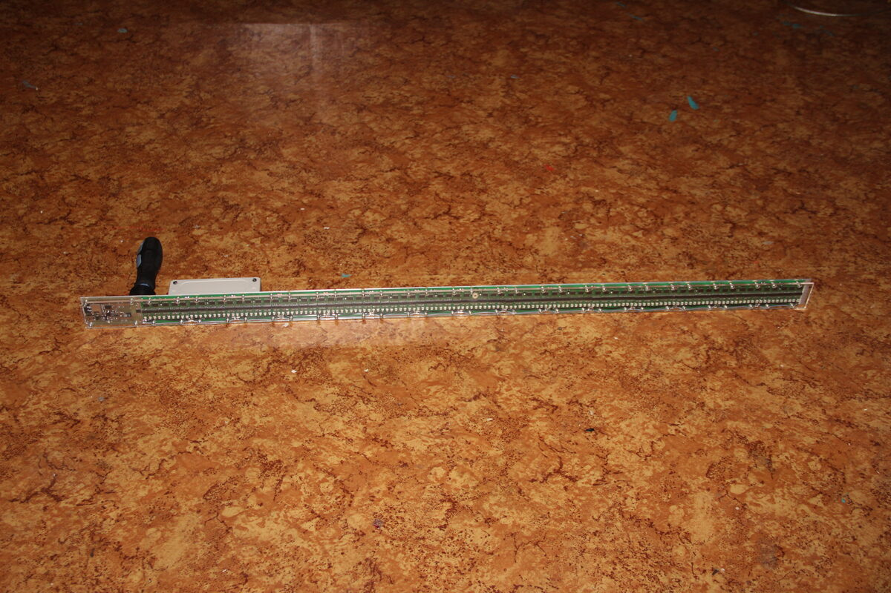
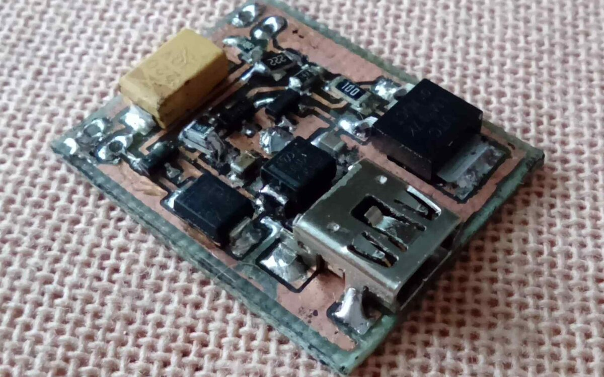
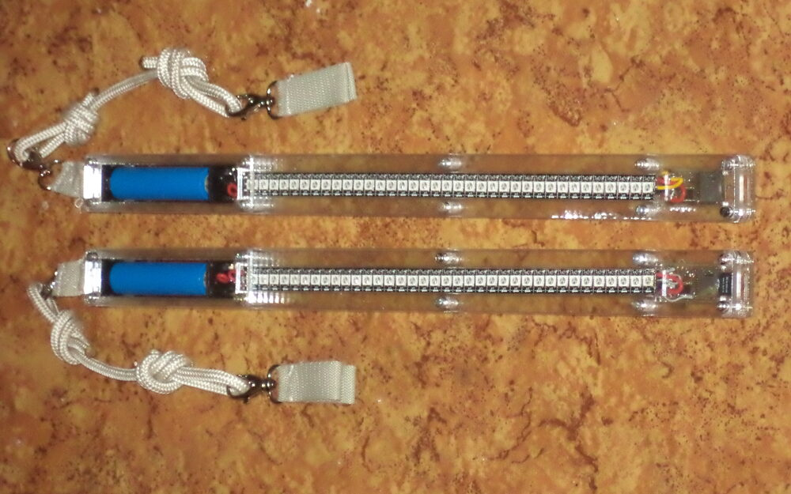
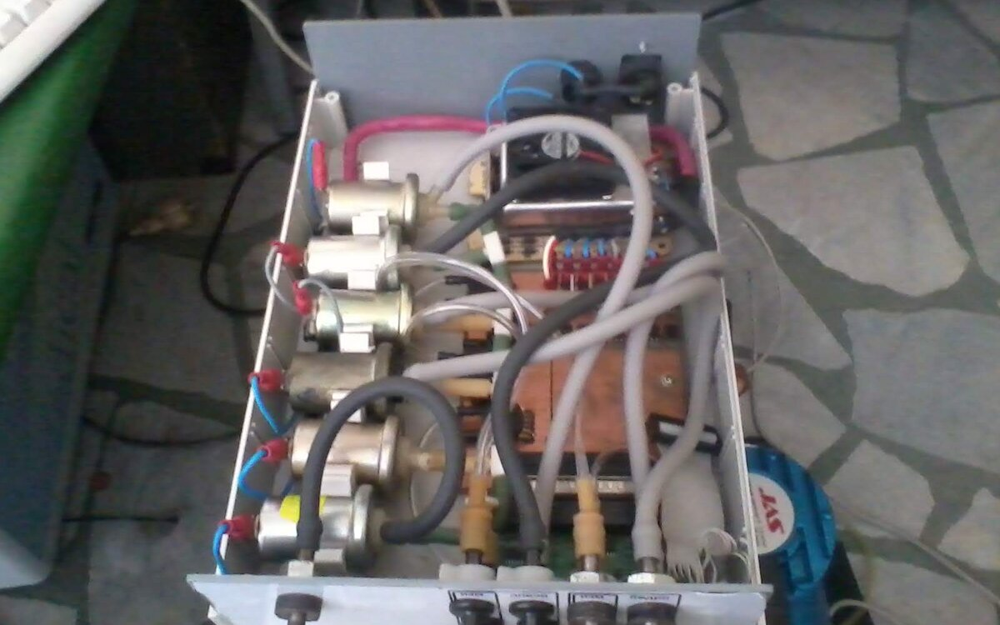
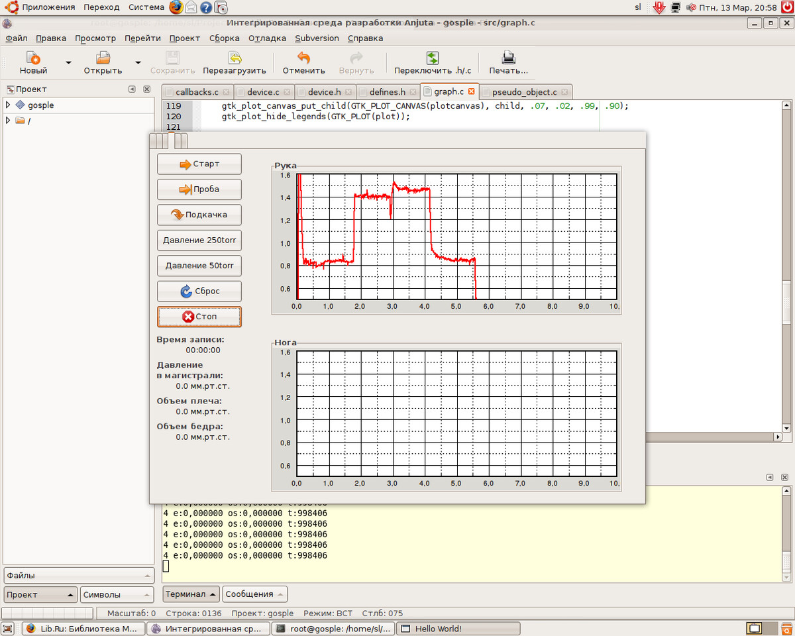
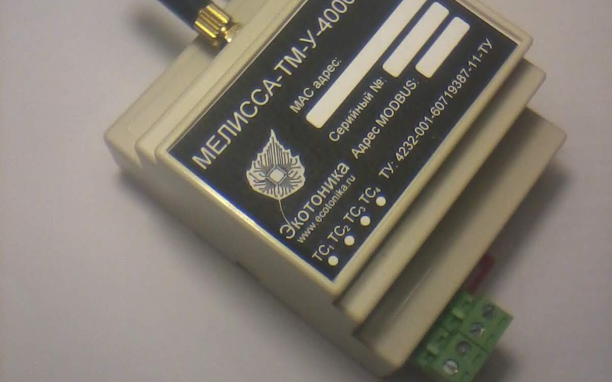

[01] Наш опыт в цифрах


от₽
стоимость консультации
₽
// Вадим Черенёв · Пермь
Схема → плата → прошивка → Linux → облако. 20 лет практики.
₽Разработка, прототипирование, производство — всё в одном месте.

Без «под ключ» и «полного цикла». Как есть.
Могу в сжатые сроки дендрофекальным методом собрать что угодно. Но результаты оно покажет средние.
Сделаю тестовые образцы, отлажу, соберу стенды, подготовлю документацию, а толку? Все равно не взлетит.
А куда мне деваться? Но вам бы лучше обратиться к нормальным специалистам.
Две линейки, за которые платили деньги. Компании в итоге проявили редкое благоразумие и перешли на проекты других разработчиков. Сами компании успешно существуют до сих пор.

2017–2020
Вся электроника и ПО, MQTT-телеметрия и облако. Производство, документация, стенды.
— STM8 → STM32 → OrangePi

2003–2008
Линейка модулей на RS-485: реле, диммеры, входы, сценарии; опрос 247 устройств за секунду. Компания выросла из моего курсового, но вклад по CV скромнее: «часть устройств линейки LanDrive2» и «честный» ModBus.
— AVR ATmega/ATtiny · Modbus RTU · ТУ 2007
Шесть из восемнадцати проектов на oshwlab. Метрики живые на 2026-09-02 и сами всё говорят. Пустые описания публикаций сохранены аутентично.

2018 · RS-485
Репитер шины ModBus, целиком укладывающийся в пять долларов BOM — отсюда и название. Обновлялся до 2025 года: 4 тысячи просмотров и 9 звёзд, вторая по популярности публикация.
— STM8S001 · 4088 просмотров · 9★

2018 · свет
Шесть ШИМ-каналов — «ещё один RGB-контроллер», как честно сказано в слаге публикации. Три тысячи просмотров, пять форков при двух звёздах: копировали молча.
— слаг: Another_RGB_LED_controller · 3060 просмотров · 2★

2018 · телефония
Восемь реле, которыми управляют тонами набора номера. ULN2803 на восемь каналов, обновления до 2024 года, четыре форка — люди собирали себе.
— oshwlab.com/shadowlamer/dtmfcont · 3331 просмотр

2018 · POV
POV-прядильщик: линейка светодиодов на подшипнике 158928Z рисует картинку в воздухе. Две платы — голова и база. На фото голова, вне вращения.
— LED mincer · STM32F030 + ULN2003 · 1486 просмотров

2018 · питание
Зарядное для литиевых банок на трёх LM317 — сорокалетнему регулятору нашлась работа. Полторы тысячи просмотров, ноль лайков и форков: работает — и ладно.
— LM317 ×3 · 1405 просмотров

2019 · электронный конструктор
Английское название (Best Construction Set Ever) обещает именно это, шелкография честно уточняет: v0.1. Пять плат, BOM на 34 позиции, гайки и болты. На фото — робот: батарея на скотче, провода не уложены.
— oshwlab.com/shadowlamer/BCSE · Public Domain · 1,8k просмотров
Остальные двенадцать — в профиле oshwlab.com/shadowlamer.
Большинство не взлетело, часть не доделана; одна дошла до серии.

2012–2014 · не продолжена
Светомузыка на теле: ATmega, FatFs, шоу с SD-карты, FHT-анализ звука в реальном времени, 24 ШИМ-канала. Был и редактор шоу — ShowMaker. Костюмы кончились, пои — нет.

~2008 · заброшен
Медицинский прибор, заявка на изобретение, Lazarus-софт. Не взлетел. Заявка осталась заявкой.


2011–2015 · не продолжена
Телематика на ZigBee Pro mesh с FreeModbus; ТУ 4232-001-60719387-11 с подписью главного инженера. Дошла до двух циклов производства — и осталась в галерее незавершённого.

Список открытый, потому что скрыть пункт — значит добавить его шестым.
Нет смысла со мной связываться, так как времени у меня всё равно нет.